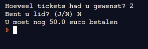
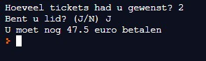
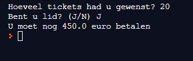

De dansschool ‘de rode schoentjes’ geeft jaarlijks een show.
Hun tickets kosten 25,00 euro (PRIJS_TICKET). Dat is voor sommigen redelijk veel. Daarom geven ze korting aan hun leden.
Als ze dan nog eens met een grote groep komen, krijgen ze nog extra korting.
Bereken hoeveel iemand moet betalen.
Hieronder vind je de schermafdruk van een uitvoering van het programma:


